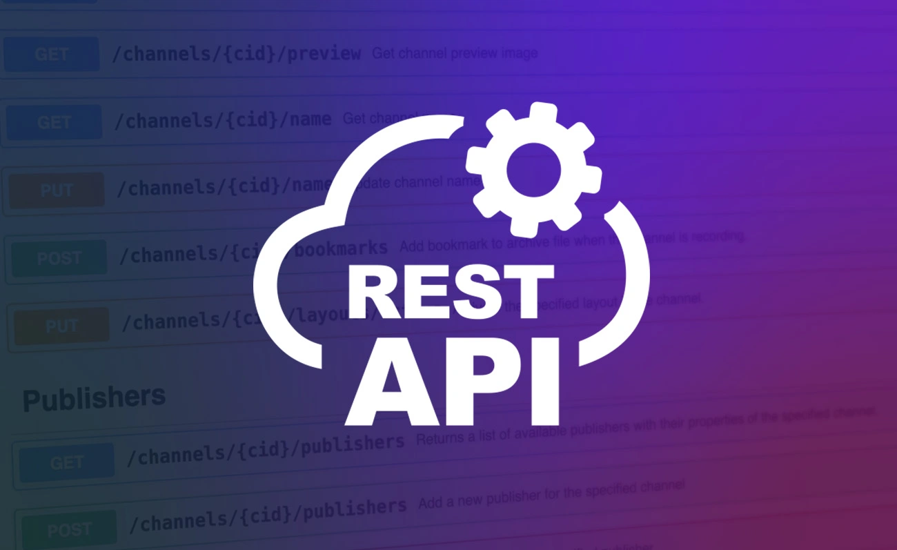
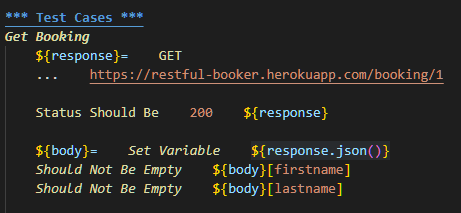
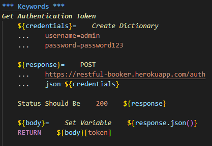
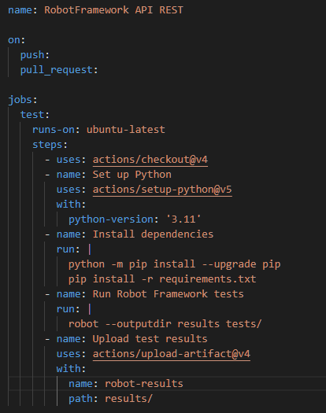

API REST Test Automation
- Tools: Robot Framework & GitHub Actions
- Languages: Python
- API used: Restful Booker
- GitHub Repository
The goal of this small project was to learn test automation using a REST API and Robot Framework.
Contents
Testing CRUD operations
- As Restful Booker has a booking management system, the tests focus on creating, reading, updating, and deleting bookings. All data is returned to be validated and the HTTP status codes are checked.
- I also implemented an authentication test and keywords to facilitate the testing process.


Continuous Integration
- To ensure the quality of the project, I implemented a Continuous Integration (CI) pipeline using GitHub Actions.
- The CI pipeline runs the tests automatically at each push and pull request, ensuring that any new code does not break existing functionality.

Skills worked on

Robot Framework
- > API REST Testing
- > Keywords
- > Requests library

Git
- > Version Control
- > Continuous Integration